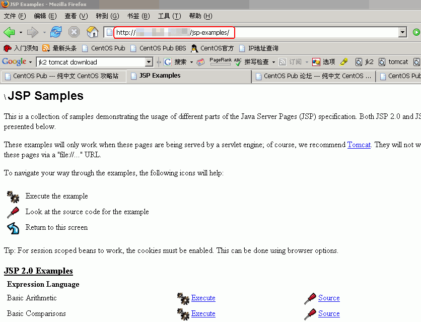
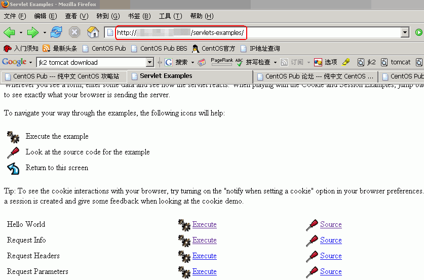

<<< 返回［配置详解］索引
< Servlet/JSP服务器的构建（Tomcat5） > （最近更新日：2006/09/21）
本文启发于本站成员 xaay 原创文档“ CENTOS4配置JSP教程 ”。
[原文URL：http://www.centospub.com/bbs/viewthread.php?tid=127&extra=page%3D1 （论坛注册用户可见）]
所谓 Java Servlet ，是指用 Java 语言，实现动态网页的创建的功能，一般把简单的把它称为“Servlet”（无中文译文）的情况比较常见。和它处于同等类别的技术还有我们知道的Perl、PHP、ASP等等。Servlet算是J2EE中的一部分，所以在企业应用方面，Servlet技术被广泛的应用着。而所谓的JSP是Servlet技术的延伸，Servlet程序就是通过JSP来自动生成的。通常Servlet和JSP被混为一谈的情况比较多见，但严格上说，Servlet和JSP是两种不同的技术…但也正因为它们通常作为“搭档”，JSP也被认作是Servlet的一种功能。
下面我们就介绍一下在CentOS下构建Servlet/JSP服务器的方法。
[1] 卸载CentOS系统默认的Java编译器--gcj。
为了默认使用Sun的javac作为Java的编译器，首先删除CentOS系统默认的Java编译器--gcj。
[root@sample ~]# rpm -qa | grep gcj ← 确认gcj的版本号
libgcj-3.4.5-2
libgcj-devel-3.4.5-2
java-1.4.2-gcj-compat-1.4.2.0-27jpp ← 根据版本号卸载gcj
[root@sample ~]# yum -y remove java-1.4.2-gcj-compat ← 卸载gcj
Setting up Remove Process
Resolving Dependencies
--> Populating transaction set with selected packages. Please wait.
---> Package java-1.4.2-gcj-compat.noarch 0:1.4.2.0-27jpp set to be erased
--> Running transaction check
Dependencies Resolved
=============================================================================
Package Arch Version Repository Size
=============================================================================
Removing:
java-1.4.2-gcj-compat noarch 1.4.2.0-27jpp installed 2.2 k
Transaction Summary
=============================================================================
Install 0 Package(s)
Update 0 Package(s)
Remove 1 Package(s)
Total download size: 0
Downloading Packages:
Running Transaction Test
Finished Transaction Test
Transaction Test Succeeded
Running Transaction
Removing : java-1.4.2-gcj-compat ######################### [1/1]
Removed: java-1.4.2-gcj-compat.noarch 0:1.4.2.0-27jpp
Complete! |
[2] 下载J2SDK。
下载页面：
http://java.sun.com/javase/downloads/index.jsp ，找到“
JDK 5.0 Update X ”（本文档编辑时，最新版本为8）后面的“
Download”，在出现下载页面的时候，要先点击“
Accept License Agreement ”的基础上，选择“
Linux self-extracting file”，下载并保存到客户端（自用PC）的适当位置。
重要：在以上整个下载过程中，请用IE浏览器来操作！
当前存在的Bug之一：用Firefox或Mozilla浏览器下载的二进制压缩包，在服务器上运行会报错。对此，只能期待Sun对其改进。
然后，通过FTP方式上传到服务器上。
并将其置于root用户的根目录下。（您也可以通过闪存或其他任何方便的方式来移动到服务器上。）
如果您还没有构建FTP服务器，并想通过FTP方式转移，请参照本站“
用 ProFTPD 构建 FTP 服务器 ”及“
用 FTP 客户端软件连接到服务器 ”。
[3] 安装J2SDK。
[root@sample ~]# chown root. jdk-1_5_0_08-linux-i586.bin ← 改变二进制压缩包的归属为root
[root@sample ~]# chmod 700 jdk-1_5_0_08-linux-i586.bin ← 改变属性为700
[root@sample ~]# ./jdk-1_5_0_08-linux-i586.bin ← 执行，解压二进制包
Sun Microsystems, Inc. Binary Code License Agreement
for the JAVA 2 PLATFORM STANDARD EDITION DEVELOPMENT
KIT 5.0
SUN MICROSYSTEMS, INC. ("SUN") IS WILLING TO LICENSE
THE SOFTWARE IDENTIFIED BELOW TO YOU ONLY UPON THE
CONDITION THAT YOU ACCEPT ALL OF THE TERMS CONTAINED IN
THIS BINARY CODE LICENSE AGREEMENT AND SUPPLEMENTAL
LICENSE TERMS (COLLECTIVELY "AGREEMENT"). PLEASE READ
THE AGREEMENT CAREFULLY. BY DOWNLOADING OR INSTALLING
THIS SOFTWARE, YOU ACCEPT THE TERMS OF THE AGREEMENT.
INDICATE ACCEPTANCE BY SELECTING THE "ACCEPT" BUTTON AT
THE BOTTOM OF THE AGREEMENT. IF YOU ARE NOT WILLING TO
BE BOUND BY ALL THE TERMS, SELECT THE "DECLINE" BUTTON
AT THE BOTTOM OF THE AGREEMENT AND THE DOWNLOAD OR
INSTALL PROCESS WILL NOT CONTINUE.
1. DEFINITIONS. "Software" means the identified above
in binary form, any other machine readable materials
(including, but not limited to, libraries, source
files, header files, and data files), any updates or
……………………………………
……………………………………
……中间阅读协议信息省略……
……协议阅读中按空格翻页……
……………………………………
……………………………………
H. Termination for Infringement. Either party may
terminate this Agreement immediately should any
Software become, or in either party's opinion be likely
to become, the subject of a claim of infringement of
any intellectual property right.
For inquiries please contact: Sun Microsystems, Inc.,
4150 Network Circle, Santa Clara, California 95054,
U.S.A. (LFI#143333/Form ID#011801)
Do you agree to the above license terms? [yes or no]
yes ← 输入yes，同意协议
Unpacking...
Checksumming...
0
0
Extracting...
UnZipSFX 5.42 of 14 January 2001, by Info-ZIP (Zip-Bugs@lists.wku.edu).
creating: jdk1.5.0_08/
creating: jdk1.5.0_08/jre/
creating: jdk1.5.0_08/jre/bin/
inflating: jdk1.5.0_08/jre/bin/java
inflating: jdk1.5.0_08/jre/bin/keytool
inflating: jdk1.5.0_08/jre/bin/policytool
inflating: jdk1.5.0_08/jre/bin/kinit
inflating: jdk1.5.0_08/jre/bin/klist
inflating: jdk1.5.0_08/jre/bin/ktab
inflating: jdk1.5.0_08/jre/bin/rmiregistry
inflating: jdk1.5.0_08/jre/bin/rmid
inflating: jdk1.5.0_08/jre/bin/tnameserv
……………………………………
……………………………………
………中间提示信息省略………
……………………………………
……………………………………
Creating jdk1.5.0_08/lib/tools.jar
Creating jdk1.5.0_08/jre/lib/rt.jar
Creating jdk1.5.0_08/jre/lib/jsse.jar
Creating jdk1.5.0_08/jre/lib/charsets.jar
Creating jdk1.5.0_08/jre/lib/ext/localedata.jar
Creating jdk1.5.0_08/jre/lib/plugin.jar
Creating jdk1.5.0_08/jre/lib/javaws.jar
Creating jdk1.5.0_08/jre/lib/deploy.jar
[root@sample ~]# mv jdk1.5.0_08/ /usr/local/ ← 将解压后的目录移动至/usr/local/
[root@sample ~]# rm -f jdk-1_5_0_08-linux-i586.bin ← 删除安装后遗留的源文件 |
[4] 安装Tomcat5
[root@sample ~]# wget http://apache.justdn.org/tomcat/tomcat-5/v5.0.28/bin/jakarta-tomcat-5.0.28.tar.gz ← 下载tomcat
--19:51:58-- http://apache.justdn.org/tomcat/tomcat-5/v5.0.28/bin/jakarta-tomcat-5.0.28.tar.gz
=> `jakarta-tomcat-5.0.28.tar.gz'
Resolving apache.justdn.org... 61.129.78.119
Connecting to apache.justdn.org|61.129.78.119|:80... connected.
HTTP request sent, awaiting response... 302 Found
Location: ftp://justdn.org/apache/tomcat/tomcat-5/v5.0.28/bin/jakarta-tomcat-5.0.28.tar.gz [following]
--19:51:59-- ftp://justdn.org/apache/tomcat/tomcat-5/v5.0.28/bin/jakarta-tomcat-5.0.28.tar.gz
=> `jakarta-tomcat-5.0.28.tar.gz'
Resolving justdn.org... 61.129.78.119
Connecting to justdn.org|61.129.78.119|:21... connected.
Logging in as anonymous ... Logged in!
==> SYST ... done. ==> PWD ... done.
==> TYPE I ... done. ==> CWD /apache/tomcat/tomcat-5/v5.0.28/bin ... done.
==> PASV ... done. ==> RETR jakarta-tomcat-5.0.28.tar.gz ... done.
[ <=> ] 10,718,313 236.29K/s
19:53:11 (152.98 KB/s) - `jakarta-tomcat-5.0.28.tar.gz' saved [10718313]
[root@sample ~]# tar zxvf jakarta-tomcat-5.0.28.tar.gz ← 展开被压缩的tar文件
[root@sample ~]# mv jakarta-tomcat-5.0.28 /usr/local/tomcat ← 移动被展开的目录到相应目录
[root@sample ~]# rm -f jakarta-tomcat-5.0.28.tar.gz ← 删除安装后遗留的源文件 |
[5] 安装mod_jk。
在安装mod_jk之前，要首先安装httpd-devel，以便于用apxs命令来让mod_jk模块的安装顺利进行。
[root@sample modules]# yum -y install httpd-devel ← 在线安装httpd-devel
Setting up Install Process
Setting up repositories
dag 100% |=========================| 1.1 kB 00:00
update 100% |=========================| 951 B 00:00
base 100% |=========================| 1.1 kB 00:00
addons 100% |=========================| 951 B 00:00
extras 100% |=========================| 1.1 kB 00:00
Reading repository metadata in from local files
Reducing Dag RPM Repository for Red Hat Enterprise Linux to included packages only
Finished
Parsing package install arguments
Resolving Dependencies
--> Populating transaction set with selected packages. Please wait.
---> Downloading header for httpd-devel to pack into transaction set.
httpd-devel-2.0.52-28.ent 100% |=========================| 28 kB 00:00
---> Package httpd-devel.i386 0:2.0.52-28.ent.centos4 set to be updated
--> Running transaction check
--> Processing Dependency: apr-util-devel for package: httpd-devel
--> Processing Dependency: apr-devel for package: httpd-devel
--> Processing Dependency: pcre-devel for package: httpd-devel
--> Restarting Dependency Resolution with new changes.
--> Populating transaction set with selected packages. Please wait.
---> Downloading header for apr-devel to pack into transaction set.
apr-devel-0.9.4-24.5.c4.2 100% |=========================| 32 kB 00:00
---> Package apr-devel.i386 0:0.9.4-24.5.c4.2 set to be updated
---> Downloading header for apr-util-devel to pack into transaction set.
apr-util-devel-0.9.4-21.i 100% |=========================| 25 kB 00:00
---> Package apr-util-devel.i386 0:0.9.4-21 set to be updated
---> Downloading header for pcre-devel to pack into transaction set.
pcre-devel-4.5-3.2.RHEL4. 100% |=========================| 6.8 kB 00:00
---> Package pcre-devel.i386 0:4.5-3.2.RHEL4 set to be updated
--> Running transaction check
Dependencies Resolved
=============================================================================
Package Arch Version Repository Size
=============================================================================
Installing:
httpd-devel i386 2.0.52-28.ent.centos4 base 145 k
Installing for dependencies:
apr-devel i386 0.9.4-24.5.c4.2 base 503 k
apr-util-devel i386 0.9.4-21 base 239 k
pcre-devel i386 4.5-3.2.RHEL4 base 96 k
Transaction Summary
=============================================================================
Install 4 Package(s)
Update 0 Package(s)
Remove 0 Package(s)
Total download size: 983 k
Downloading Packages:
(1/4): apr-devel-0.9.4-24 100% |=========================| 503 kB 00:04
(2/4): apr-util-devel-0.9 100% |=========================| 239 kB 00:08
(3/4): pcre-devel-4.5-3.2 100% |=========================| 96 kB 00:02
(4/4): httpd-devel-2.0.52 100% |=========================| 145 kB 00:03
Running Transaction Test
Finished Transaction Test
Transaction Test Succeeded
Running Transaction
Installing: apr-devel ######################### [1/4]
Installing: apr-util-devel ######################### [2/4]
Installing: pcre-devel ######################### [3/4]
Installing: httpd-devel ######################### [4/4]
Installed: httpd-devel.i386 0:2.0.52-28.ent.centos4
Dependency Installed: apr-devel.i386 0:0.9.4-24.5.c4.2 apr-util-devel.i386 0:0.9.4-21 pcre-devel.i386 0:4.5-3.2.RHEL4
Complete!
|
然后安装JK2。
[root@sample modules]# wget http://archive.apache.org/dist/jakarta/tomcat-connectors/jk2/jakarta-tomcat-connectors-jk2-src-current.tar.gz ← 下载JK2的源代码
--09:13:57-- http://archive.apache.org/dist/jakarta/tomcat-connectors/jk2/jakarta-tomcat-connectors-jk2-src-current.tar.gz
=> `jakarta-tomcat-connectors-jk2-src-current.tar.gz'
Resolving archive.apache.org... 192.87.106.226
Connecting to archive.apache.org|192.87.106.226|:80... connected.
HTTP request sent, awaiting response... 200 OK
Length: 907,088 (886K) [application/x-tar]
100%[====================================>] 907,088 268.51K/s ETA 00:00
09:14:01 (267.76 KB/s) - `jakarta-tomcat-connectors-jk2-src-current.tar.gz' saved [907088/907088]
[root@sample ~]# tar zxvf jakarta-tomcat-connectors-jk2-src-current.tar.gz ← 解开被压缩的源代码
[root@sample ~]# cd jakarta-tomcat-connectors-jk2*/jk/native2 ← 进入相应目录
[root@sample native2]# ./configure --with-apxs2=/usr/sbin/apxs ← 配置
checking build system type... i686-redhat-linux-gnu
checking host system type... i686-redhat-linux-gnu
checking target system type... i686-redhat-linux-gnu
checking for a BSD-compatible install... /usr/bin/install -c
checking whether build environment is sane... yes
checking for gawk... gawk
checking whether make sets $(MAKE)... yes
checking for gcc... gcc
checking for C compiler default output... a.out
checking whether the C compiler works... yes
checking whether we are cross compiling... no
……………………………………
……………………………………
……中间提示信息省略…………
……………………………………
……………………………………
checking checking for iis...... not provided
checking checking for iPlanet...... not provided
checking for tomcat33 location... not provided
checking for tomcat40 location... not provided
checking for tomcat41 location... not provided
configure: creating ./config.status
config.status: creating Makefile
config.status: creating server/apache13/Makefile
config.status: creating server/apache13/Makefile.apxs
config.status: creating server/apache2/Makefile
config.status: creating server/apache2/Makefile.apxs
config.status: creating ../build.properties
config.status: creating scripts/build/unix/dummy
config.status: executing depfiles commands
[root@sample native2]# make ← 编译
list=' server/apache2'; \
for i in $list; do \
echo "Making $target in $i"; \
if test "$i" != "."; then \
(cd $i && make) || exit 1; \
fi; \
done;
Making in server/apache2
make[1]: Entering directory `/root/jakarta-tomcat-connectors-jk2-2.0.4-src/jk/native2/server/apache2'
mkdir -p ../../../build/jk2/apache2/usr/lib/httpd/modules
/bin/sh /usr/lib/apr/build/libtool --silent --mode=compile gcc -O2 -g -pipe -m32
……………………………………
……………………………………
……中间提示信息省略…………
……………………………………
……………………………………
/bin/sh /usr/lib/apr/build/libtool --silent --mode=install /bin/cp ../../../build/jk2/apache2/mod_jk2.la `pwd`/../../../build/jk2/apache2//usr/lib/httpd/modules
libtool: install: warning: remember to run `libtool --finish /usr/lib/httpd/modules'
/bin/cp ../../../build/jk2/apache2//usr/lib/httpd/modules/mod_jk2.so ../../../build/jk2/apache2/mod_jk2.so
make[1]: Leaving directory `/root/jakarta-tomcat-connectors-jk2-2.0.4-src/jk/native2/server/apache2'
[root@sample native2]# cd ../build/jk2/apache2 ← 进入mod_jk2所在的相应目录
[root@sample apache2]# apxs -n jk2 -i mod_jk2.so ← 为Apache安装JK2模块
/usr/lib/httpd/build/instdso.sh SH_LIBTOOL='/bin/sh /usr/lib/apr/build/libtool' mod_jk2.so /usr/lib/httpd/modules
/bin/sh /usr/lib/apr/build/libtool --mode=install cp mod_jk2.so /usr/lib/httpd/modules/
cp mod_jk2.so /usr/lib/httpd/modules/mod_jk2.so
Warning! dlname not found in /usr/lib/httpd/modules/mod_jk2.so.
Assuming installing a .so rather than a libtool archive.
chmod 755 /usr/lib/httpd/modules/mod_jk2.so
[root@sample apache2]# cp ../../../conf/workers2.properties /etc/httpd/conf/ ← 复制Apache相关的配置文件到相应目录
[root@sample apache2]# cd ← 回到root跟目录
[root@sample ~]# rm -rf jakarta-tomcat-connectors-jk2* ← 删除安装遗留的源文件
|
[root@sample ~]# vi /etc/profile ← 编辑环境变量文件，添加如下语句到文件文尾
export JAVA_HOME=/usr/local/jdk1.5.0_08
export PATH=$PATH:$JAVA_HOME/bin
export CLASSPATH=.:$JAVA_HOME/jre/lib:$JAVA_HOME/lib:$JAVA_HOME/lib/tools.jar
export TOMCAT_HOME=/usr/local/tomcat
export CATALINA_HOME=/usr/local/tomcat
export CLASSPATH=$CLASSPATH:$CATALINA_HOME/common/lib
[root@sample ~]# source /etc/profile ← 使环境变量生效 |
[1] 配置Tomcat。
[root@sample ~]# vi /usr/local/tomcat/conf/web.xml ← 编辑web.xml
<servlet>
<servlet-name>default</servlet-name>
<servlet-class>
org.apache.catalina.servlets.DefaultServlet
</servlet-class>
<init-param>
<param-name>debug</param-name>
<param-value>0</param-value>
</init-param>
<init-param>
<param-name>listings</param-name>
<param-value>true</param-value> ← 找到这一行，将true改为false
↓
<param-value>false</param-value> ← 变为此状态，禁止查看目录结构信息
</init-param>
<load-on-startup>1</load-on-startup>
</servlet>
[root@sample ~]# vi /usr/local/tomcat/conf/server.xml ← 编辑server.xml
<Host name="localhost" debug="0" appBase="webapps"
unpackWARs="true" autoDeploy="true"
xmlValidation="false" xmlNamespaceAware="false"> ← 找到这一行，接这一行添加下面的语句：
<Context path="" docBase="/var/www/html" debug="0" ← 指定Web根目录，这里以/var/www/html为例
reloadable="true" crossContext="true"/> |
[2] 配置Apache的相关设置。
[root@sample ~]# vi /etc/httpd/conf/workers2.properties ← 修改JK2的配置文件，添加如下行到文尾：
[uri:/servlets-examples/*]
[uri:/jsp-examples/*]
[root@sample usr]# vi /etc/httpd/conf/httpd.conf ← 编辑Apache的配置文件
LoadModule cgi_module modules/mod_cgi.so ← 找到这一行，在下面添加如下新的行
LoadModule jk2_module modules/mod_jk2.so ← 添加此行，为Apache添加JK2的模块
[root@sample ~]# /etc/rc.d/init.d/httpd restart
Stopping httpd: [ OK ]
Starting httpd: [ OK ] |
首先为Tomcat编辑一段启动脚本，并置于/etc/rc.d/init.d目录下，让Tomcat和httpd一样作为一项系统服务，并随系统自动启动。
[root@sample ~]# vi /etc/rc.d/init.d/tomcat ← 建立Tomcat启动脚本，如下：
#!/bin/bash
#
# Startup script for the tomcat
#
# chkconfig: 345 80 15
# description: Tomcat is a Servlet+JSP Engine.
# Source function library.
. /etc/rc.d/init.d/functions
start(){
if [ -z $(/sbin/pidof java) ]; then
echo "Starting tomcat"
/usr/local/tomcat/bin/startup.sh
touch /var/lock/subsys/tomcat
else
echo "tomcat allready running"
fi
}
stop(){
if [ ! -z $(/sbin/pidof java) ]; then
echo "Shutting down tomcat"
/usr/local/tomcat/bin/shutdown.sh
until [ -z $(/sbin/pidof java) ]; do :; done
rm -f /var/lock/subsys/tomcat
else
echo "tomcat not running"
fi
}
case "$1" in
start)
start
;;
stop)
stop
;;
restart)
stop
start
;;
status)
/usr/local/tomcat/bin/catalina.sh version
;;
*)
echo "Usage: $0 {start|stop|restart|status}"
esac
exit 0
[root@sample ~]# chmod 755 /etc/rc.d/init.d/tomcat ← 将启动脚本属性设置为755（使之可执行）
[root@sample ~]# chkconfig --add tomcat ← 将Tomcat加入到chkconfig中
[root@sample ~]# chkconfig tomcat on ← 将Tomcat设置为自启动
[root@sample ~]# chkconfig --list tomcat ← 确认Tomcat服务状态
tomcat 0:off 1:off 2:on 3:on 4:on 5:on 6:off ← 确认2~5为on的状态就OK
[root@sample ~]# /etc/rc.d/init.d/tomcat start ← 启动Tomcat
Starting tomcat
Using CATALINA_BASE: /usr/local/tomcat
Using CATALINA_HOME: /usr/local/tomcat
Using CATALINA_TMPDIR: /usr/local/tomcat/temp
Using JAVA_HOME: /usr/local/jdk1.5.0_08
|
[1] 在浏览器上输入 http://你的IP地址（或你的域名）/jsp-examples ，确认是否出现如下画面：

如果出现如上画面，说明JSP正常工作。
[2] 在浏览器上输入 http://你的IP地址（或你的域名）/servlets-examples ，确认是否出现如下画面：

如果出现如上画面，说明JSP正常工作。